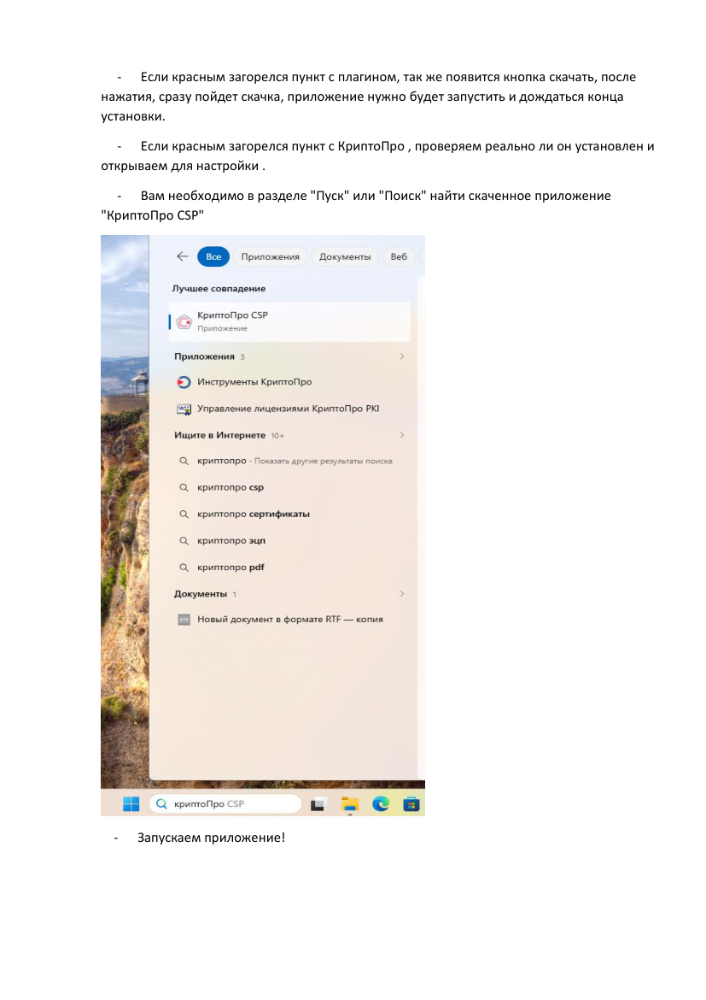
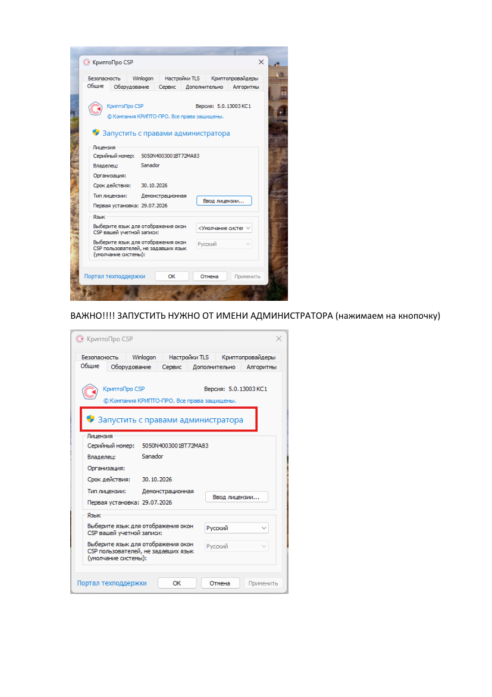
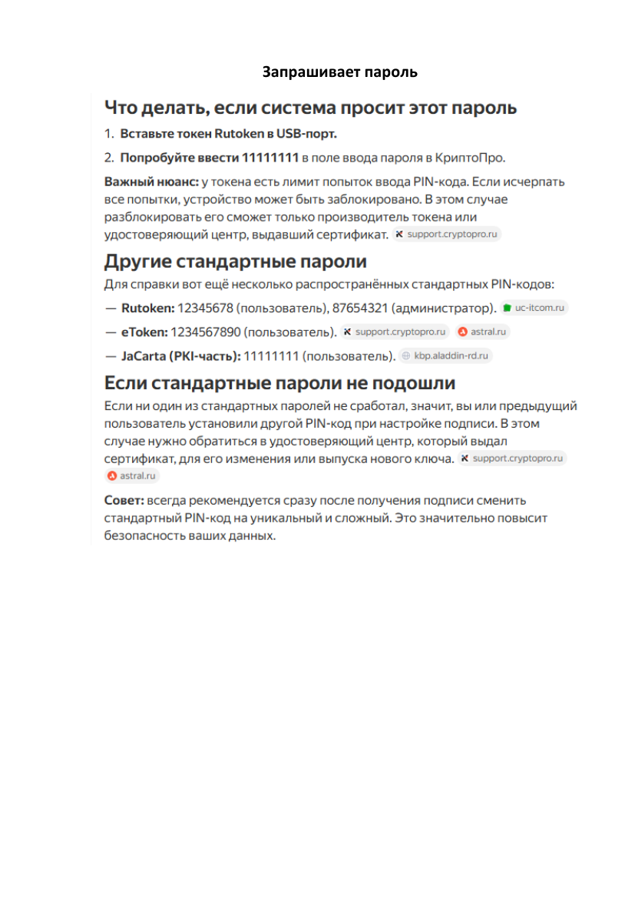

⬇️ Установка
1
Заходим на сайт Санадор и авторизуемся (или регистрируемся).

2
После авторизации нажимаем на вкладку «ЭПД» → «Регистрация».

3
Если КриптоПро нет на компьютере — появится красное окошко.

4
Чтобы скачать приложение КриптоПро и плагин для браузера, нажимаем на «ссылке» в этом окошке (гиперссылка).

5
В полученном окне заполняем форму: Ф.И.О, Email, Организация (не обязательно).

6
Выбираем операционную систему (Windows, macOS, Linux DEB/RPM). Обязательно ставим галочки на согласие обработки перс. данных и условия лицензионного соглашения. Нажимаем «Скачать».

7
В разделе «Загрузки» (правый угол) появится файл — открываем его.

8
Начинаем установку. В момент установки потребуется перемещать указатель мыши для генерации случайной последовательности.
Если ранее КриптоПро на компьютере уже стоял — это окно не появится.

9
Когда полоска генерации полностью заполнится — ждём завершения установки.

10
Дальше начнётся установка плагина.

11
После установки плагина высветится окно завершения.

12
Если нет Яндекс Браузера — нажимаем на галочку для его установки и нажимаем «ОК».
⚠️ Компьютер НЕ перезагружаем!

13
Установка расширения. Заходим в раздел «Расширения». Есть 3 состояния у расширения:



14
Нажимая «Установить», попадаем на сайт магазина — жмём «Добавить в Яндекс Браузер».

15
Разрешаем.

16
Возвращаемся на сайт Санадор и обновляем страницу.

17
Разрешаем.

18
Если всё сделано правильно — сертификат будет виден при выборе в разделе «Регистрация ЭПД».

19
✅ Установка завершена!